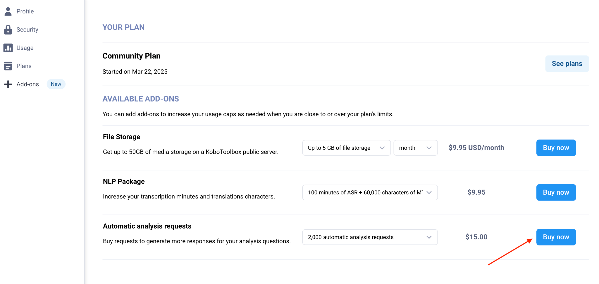

Busca en nuestra documentación, explora nuestros recursos y visita nuestro Foro de la Comunidad para obtener información más detallada
Última actualización: 23 Jul 2026
Los planes Community, Professional y Teams de KoboToolbox tienen límites de uso específicos para envíos de encuestas, almacenamiento de archivos, y transcripción, traducción y análisis automáticos.
Límite de envíos: El número de envíos de encuestas que pueden recolectar los proyectos de tu cuenta por ciclo de facturación.
Límite de almacenamiento: El tamaño total de fotos, audios, videos y archivos recolectados con tus encuestas o importados en Configuración > Archivos multimedia del proyecto.
Límite de transcripción y traducción: El número de minutos de transcripción y caracteres de traducción disponibles para grabaciones de audio.
Límite de análisis automático: El número de solicitudes de análisis generadas por IA disponibles para respuestas de preguntas de audio abiertas.
Si tu cuenta supera sus límites de uso, ciertas funcionalidades estarán temporalmente no disponibles hasta que reduzcas tu uso o actualices tu plan. Este artículo explica qué ocurre cuando alcanzas los límites de la cuenta y cómo retomar la actividad normal.
Nota: Puedes supervisar los envíos y el almacenamiento de tu cuenta en Configuración de la cuenta > Uso, donde puedes ver el uso total de tu cuenta y el uso por proyecto. Para más información, consulta Configurar la cuenta.
Cuando tu cuenta supera su límite de almacenamiento o de envíos, no puedes recibir nuevos envíos, editar envíos ni transferir proyectos a otros usuarios.
Nota: Estas restricciones no se aplican si superas tus límites de transcripción, traducción o análisis. En esos casos, solo la funcionalidad afectada estará no disponible hasta que tu cuota se restablezca o se incremente.
Si tú u otro usuario intenta enviar datos a uno de tus proyectos mientras tu cuenta supera sus límites de almacenamiento o de envíos, se mostrará un mensaje de error.
Si los usuarios están recolectando datos sin conexión con KoboCollect o formularios web, verán un mensaje de error cuando se reconecten a internet e intenten enviar. Sus envíos permanecerán guardados localmente en el dispositivo y podrán cargarse una vez que la cuenta vuelva a estar dentro de sus límites.
Nota: Estas restricciones se aplican solo a los proyectos que tú posees. Las restricciones en tu cuenta no afectarán los proyectos que otros usuarios hayan compartido contigo.
Si tu cuenta supera sus límites de almacenamiento o de envíos, aún podrás:
Iniciar sesión en tu cuenta.
Acceder a todos los proyectos y envíos existentes.
Ver, descargar y exportar datos recolectados previamente.
Enviar o editar datos en proyectos que otros usuarios hayan compartido contigo.
Si tu cuenta está restringida porque has alcanzado un límite de uso, aún tienes varias opciones. La tabla a continuación resume qué afecta cada límite y las principales formas de restaurar el acceso completo o continuar trabajando.
Límite alcanzado |
Qué ocurre |
Cómo restaurar el acceso |
|---|---|---|
Almacenamiento |
Tu cuenta no puede recibir nuevos envíos ni transferir proyectos hasta que se reduzca el uso de almacenamiento o se incremente la cuota de almacenamiento. |
Elimina archivos multimedia adjuntos, adquiere un complemento de Almacenamiento de archivos, o actualiza a un plan con más almacenamiento. |
Envíos |
Tus proyectos no pueden aceptar nuevos envíos hasta que la cuota se restablezca o se incremente. |
Espera hasta el próximo ciclo de facturación o actualiza a un plan con una cuota de envíos más alta. |
Transcripción y traducción |
La transcripción y traducción automáticas se deshabilitan temporalmente hasta que la cuota se restablezca o se incremente. |
Espera hasta el próximo ciclo de facturación, adquiere un complemento de Paquete NLP, actualiza a un plan con una cuota más alta, o usa la funcionalidad de transcripción y traducción manual. |
Análisis automatizado |
El análisis generado por IA se deshabilita temporalmente hasta que la cuota se restablezca o se incremente. |
Espera hasta el próximo ciclo de facturación, adquiere un complemento de Solicitudes de análisis automático, actualiza a un plan con una cuota más alta, o usa la funcionalidad de análisis manual. |
Si superas el límite de almacenamiento, debes reducir tu almacenamiento de archivos o incrementar tu cuota de almacenamiento para volver a recibir envíos y transferir proyectos.
Para gestionar tu uso de almacenamiento, puedes:
Actualizar a un plan con almacenamiento ilimitado.
Adquirir un complemento de Almacenamiento de archivos en Configuración de la cuenta > Complementos.
Eliminar archivos multimedia adjuntos de los proyectos que posees hasta que tu uso esté dentro de los límites de tu plan, comenzando por los archivos más grandes, como los videos.

También puedes ayudar a prevenir restricciones en la cuenta reduciendo el tamaño de los archivos enviados a través de tus formularios, por ejemplo configurando límites de tamaño de carga, reduciendo la calidad de grabación de audio, o configurando los ajustes de captura de imágenes y videos de KoboCollect.
Nota: Si tu cuenta permanece por encima del límite de almacenamiento durante más de 90 días, KoboToolbox comenzará a eliminar los archivos multimedia adjuntos (no los envíos), comenzando por los archivos más antiguos. Para evitar perder archivos, descarga cualquier archivo multimedia importante o actualiza tu plan antes de esta fecha límite.
Cuando alcanzas tu cuota mensual de envíos, tus proyectos no pueden aceptar nuevos envíos hasta que comience el próximo ciclo de facturación o se incremente tu cuota de envíos.
Para gestionar tu cuota de envíos, puedes:
Actualizar a un plan con una cuota de envíos más alta o ilimitada.
Posponer la recolección de datos hasta que tu cuota de envíos se renueve al inicio del próximo ciclo de facturación.
Nota: Si decides posponer la recolección de datos hasta que se renueve tu cuota de envíos, considera archivar el proyecto hasta entonces. Esto puede ayudar a evitar que los usuarios ingresen datos y encuentren errores de envío antes de que se restablezca la cuota.
Si alcanzas tu cuota mensual de transcripción o traducción automáticas, estas funcionalidades se deshabilitarán temporalmente.
Para gestionar tu cuota de transcripción y traducción, puedes:
Actualizar a un plan con una cuota de transcripción y traducción más alta.
Adquirir un complemento de Paquete NLP en Configuración de la cuenta > Complementos.
Posponer la transcripción y traducción hasta que tu cuota se renueve al inicio del próximo ciclo de facturación.
Continuar usando las funcionalidades de transcripción y traducción manual, que permanecen disponibles sin límite de cuota.

Si alcanzas tu cuota mensual de análisis automático, esta funcionalidad se deshabilitará temporalmente.
Para gestionar tu cuota de análisis automático, puedes:
Actualizar a un plan con una cuota de análisis automático más alta.
Adquirir un complemento de Solicitudes de análisis automático en Configuración de la cuenta > Complementos.
Posponer el análisis hasta que tu cuota se renueve al inicio del próximo ciclo de facturación.
Continuar usando las funcionalidades de análisis manual, que permanecen disponibles sin límite de cuota.

¿Encontraste lo que buscabas? ¿Te ha parecido clara la traducción? ¿Faltaba algo?
¡Comparte tus comentarios para ayudarnos a mejorar este artículo!